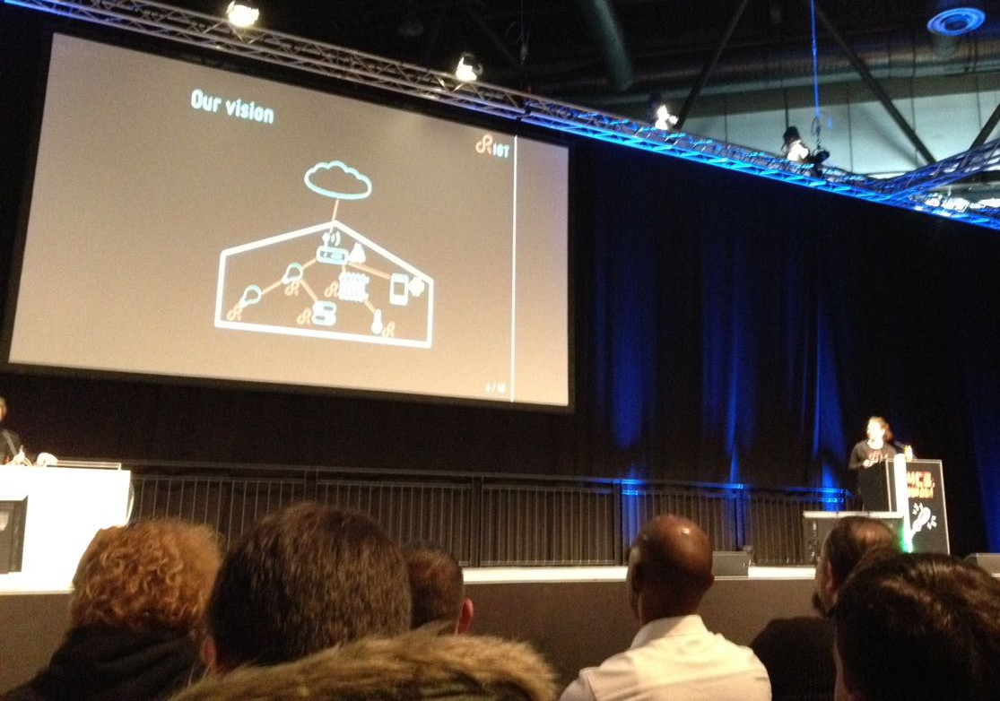
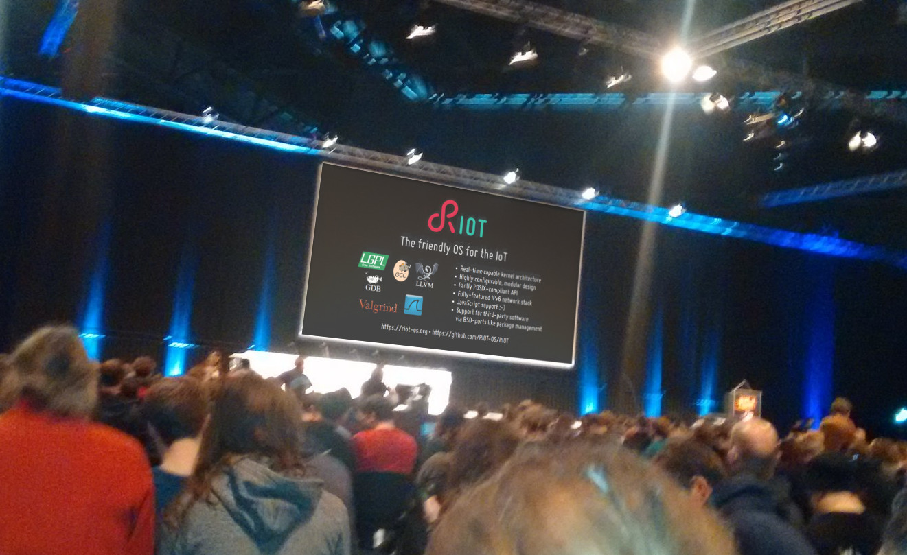

name: title-slide-cover class: middle # 34C3: Report ## Martine Lenders, FU Berlin --- class: agenda # Agenda 1. Wat is dat? 2. Wat mach ich da? 3. Wat war da? 4. Wat tun? --- class: center middle # Wat is dat? --- # What is 34C3? *34C3: 34rd Chaos Communication Congress:* - Annual meeting of the CCC e.V. (largest European hacker association) - Also meeting of the European (social) Internet community in general - This year @ Messe Leipzig - This years motto: "tuwat!" (German for: do something!) - Talks, workshops, assemblies - \>15,000 attendees *Talks:* - 4 time tracks - 8 topic tracks: <span class="art">Art & Culture</span>; <span class="ccc">CCC</span>; <span class="entertainment">Entertainment</span>; <span class="ethics">Ethics, Society & Politics</span>; <span class="hardware">Hardware & Making</span>; <span class="resilience">Resilience</span>; <span class="science">Science</span>; <span class="security">Security</span> --- class: center middle # Wat tu ich da? --- # 5 min Lightning Talk <div style="text-align: center">  </div> https://media.ccc.de/v/34c3-9257-lightning_talks_day_3#t=3218 (timestamp: 53:38) --- # “Advertisement” campaign <div style="text-align: center">  </div> --- class: center middle # Wat war da? --- # (Open Source) Software Maintainance and Governance * <a class="ethics" href="https://media.ccc.de/v/34c3-9087-organisational_structures_for_sustainable_free_software_development">Antipatterns und Missverständnisse in der Softwareentwicklung</a> * <a class="resilience" href="https://media.ccc.de/v/34c3-9087-organisational_structures_for_sustainable_free_software_development">Organisational Structures for Sustainable Free Software Development</a> * <a class="resilience" href="https://media.ccc.de/v/34c3-9249-hardening_open_source_development">Hardening Open Source Development</a> --- # Antipatterns and Missverständnisse in der Softwareentwicklung * Analysis common antipatterns in software development (from the perspective of a freelancer [fefe]) * Antipattern: common (but usually ineffective) response to recurring problem * How to prevent these antipatterns: - version control, CI everything, Unittests for stability, no bug prioritization, no monetary rewards/no punishment, documentation integration, prevent onion code, no black box audits, threat models are not certification, less group meetings, more 1-on-1 meetings * Advice for management: - Culture of error, feedback, communication of values, time for learning - Do not mandate architecture * Advice for developers: - Pressure reduction, no unrealistic requirements, (ideally) no overtime, take time you need ??? - Version control: - small patches, topic branches, assumptions about version and features in build system, split repositories with stable APIs - CI == build bot - Unittests not for testing if it works, but if it *still* works - bug prioritization ⇒ Bugwelle (minor bugs get dragged along since bugs with higher priority aren't fixed yet) - people do strange things if you reward bug fixes with money or punish them for it - documentation should always be part of the process, never separately and never as simple to edit as possible as this leads to out-dated doc! (i.e. Wiki bad) - onion code: I need to fix a bug, but it's impossible for me to understand the code (because previous developer didn't fix all warnings) ⇒ I build a new component around the previous code to fix it - Audits (specifically pentests) shouldn't be black box, otherwise you test the tester, not your system - Threat models exist for reflection by the developer, not for certification --- # Organisational Structures for Sustainable Free Software Development - Comprehensive list of references about how to organize as a FOSS community - Lessons learned from Heardbleed: (critical) FOSS always needs better funding - Dealing with money: 1. Start your own legal entity (discouraged) - Stack Overflow Effect: Adapted articles or via lawyer; might not fit actual community governance 2. Join an existing umbrella entity (aka fiscal sponsor) - Organizational structure: * Hierarchical vs consensus vs *rough consensus* * clearly defined decision making processes (esp. dealing with conflicts) - Crowdfunding does not work on its own (but as a proof-of-impact to larger funders) - Artefact maintenance vs community growth + metrics of success ??? - Why starting your own discouraged by speaker: Hard to let go, hard to restructure --- # Hardening Open Source Development - Shows how malicious code can be integrated into FOSS and tips how to mitigate this - Most IMHO overkill (assumes no common sense) for our purposes --- # Internet of Things * <a class="ethics" href="https://media.ccc.de/v/34c3-9193-internet_of_fails">Internet of Fails</a>: - Nothing new, but nice introduction into IoT security * <a class="hardware" href="https://media.ccc.de/v/34c3-9147-unleash_your_smart-home_devices_vacuum_cleaning_robot_hacking">Unleash your smart-home devices: Vacuum Cleaning Robot Hacking</a>: - Rooting Xiaomi vacuum cleaners (Ubuntu 14.04) without opening the device * <a class="ccc" href="https://media.ccc.de/v/34c3-8888-security_nightmares_0x12">Security Nightmares 0x12</a>: - New business areas in 2018: IoT ghost busters and cloud exorcists ;-) * <a class="hardware" href="https://media.ccc.de/v/34c3-8721-blinkenrocket">Blinkenrocket!</a>: - Open source educational platform - flashable via SmartPhone - potential RIOT target or RAPstore model? * <a class="resilience" href="https://media.ccc.de/v/34c3-8768-end-to-end_formal_isa_verification_of_risc-v_processors_with_riscv-formal">End-to-end formal ISA verification of RISC-V processors with riscv-formal</a>: - All evaluated CPUs had bugs in their ISA implementation * <a class="security" href="https://media.ccc.de/v/34c3-9006-implementing_an_llvm_based_dynamic_binary_instrumentation_framework">Implementing an LLVM based Dynamic Binary Instrumentation framework</a>: - Might be interesting to use with RIOT? (Instruments can be written in Python!) ??? * Not as big as last year --- # Criticism of transhumanism * <a class="art" href="https://media.ccc.de/v/34c3-9270-dude_you_broke_the_future">Dude, you broke the Future!</a> - Sci-Fi author Charles Stross reflects on challenges of Sci-Fi today - Transhumanism is a reinvention of Christianity - Future AI behavior can be modeled by speeding up behavior of corporations in past - In reverse we need to apply current worries about AIs to corporations (“Tesla isn't a Paperclip Optimizer, [but] it's a Battery Optimizer”) * <a class="ethics" href="https://media.ccc.de/v/34c3-8998-die_gottliche_informatik_the_divine_computer_science">Die göttliche Informatik / The divine Computer Science</a> - Transhumanism: totalitarian approaches to models - Questions asked often from an existing solution not from the real world (see Lyft Shuttle) <br /> ⇒ Reality is adjusted to solutions of Silicon Valley * <a class="ethics" href="https://media.ccc.de/v/34c3-9285-qualityland">QualityLand</a>: - Marc-Uwe Kling presents his new book ??? - *Transhumanism*: futurist movement, human + technology ⇒ singularity - 90% unchanged, 9% predictable, 1% unexpected --- # Technical Potpourri * <a class="resilience" href="https://media.ccc.de/v/34c3-8949-library_operating_systems">library operating systems</a>: - Introduction to unikernels * <a class="security" href="https://media.ccc.de/v/34c3-8968-are_all_bsds_created_equally">Are all BSDs created equally?</a> - Finding age old bugs in BSD-derivates * <a class="security" href="https://media.ccc.de/v/34c3-8848-type_confusion_discovery_abuse_and_protection">Type confusion: discovery, abuse, and protection</a> - Type casting in C++ can lead to security flaws (Mostly of no concern for casting in C) <br /> ⇒ tool for type confusion detection presented * <a class="security" href="https://media.ccc.de/v/34c3-9142-resilienced_kryptographie">Resilienced Kryptographie</a>: - Hints for how to make cryptography better (ask your local cryptographer!) * <a class="ethics" href="https://media.ccc.de/v/34c3-9072-bgp_and_the_rule_of_custom">BGP and the Rule of Custom</a> - Very high-level introductory into BGP * <a class="science" href="https://media.ccc.de/v/34c3-9024-holography_of_wi-fi_radiation">Holography of Wi-Fi radiation</a> - Reconstructing 3D images from WiFi signals (new perspective on indoor tracking) * <a class="resilience" href="https://media.ccc.de/v/34c3-9056-bringing_linux_back_to_server_boot_roms_with_nerf_and_heads">Bringing Linux back to server boot ROMs with NERF and Heads</a> - Replacing server UEFI/BIOS with a dedicated Linux distribution (LinuxBoot) ??? - Internet in Cuba: SNET made up of 100.000 users in Havanna alone ⇒ Largest isolated network --- # Non-technical Potpourri * <a class="ethics" href="https://media.ccc.de/v/34c3-9287-trugerische_sicherheit">Trügerische Sicherheit</a>: - Peter Schaar (Federal Commissioner for Data Protection and Freedom of Information 2003-13) gives an update on current German security laws vs fundamental rights * <a class="resilience" href="https://media.ccc.de/v/34c3-8740-the_internet_in_cuba_a_story_of_community_resilience">The Internet in Cuba: A Story of Community Resilience</a> - Presenting Cuba's unique community-driven network * <a class="ccc" href="https://media.ccc.de/v/34c3-9257-lightning_talks_day_3#t=850">Lightning Talk: attribution-generator.org</a> [[1](http://attribution-generator.org)]: - Correctly attribute CC-licensed material * <a class="science" href="https://media.ccc.de/v/34c3-9055-science_is_broken">Science is broken</a>: - Nothing new: p-value hacking, lack in reproducability, ... * <a class="ccc" href="https://media.ccc.de/v/34c3-9247-der_pc-wahl-hack">Der PC-Wahl-Hack</a>: - Fun-Talk about the Hack of the German Federal Election Software --- class: center middle # Wat tun? --- # Next year? - Finally have a RIOT assembly: * Provide workshops around RIOT - 30 / 60 min talk about one of our research topics?